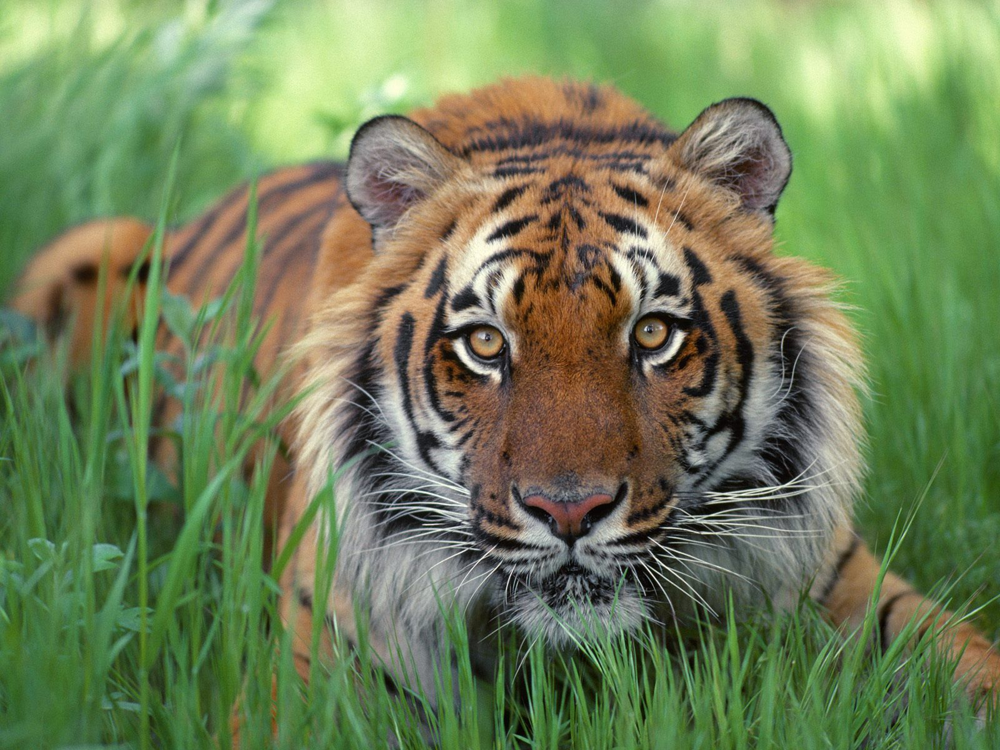
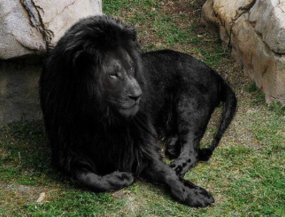
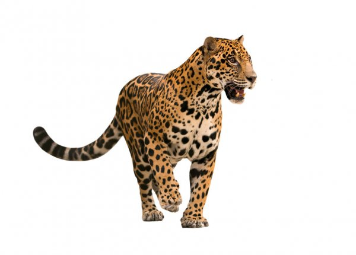

welcome every one
Animals are our companions, our workers, our eyes and ears, and our food. They appear in ancient cave paintings, and on modern commercial farms. We have domesticated some of them, while others remain wild and are sometimes endangered by our activities. They keep us company, and while they can provide comic relief, they also serve us as valuable assistants
tigers
black lion
jaguar
What's Wild? A wild animal is an animal that is, well, wild. This means that it isn't tame and it lives on its own without any help from people. A wild animal finds its own food, shelter, water and all its other needs in a specific natural habitat. Habitat can be a field, woods, pond, wetland, prairie, park, or your yard. Wild animals make their home in both the city and the country. Wildlife includes small critters that you can only see through a microscope to animals as large as whales! (Although, you won't find any whales in Wisconsin.)